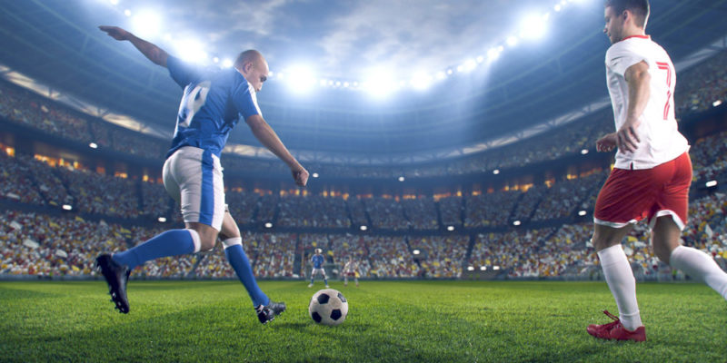
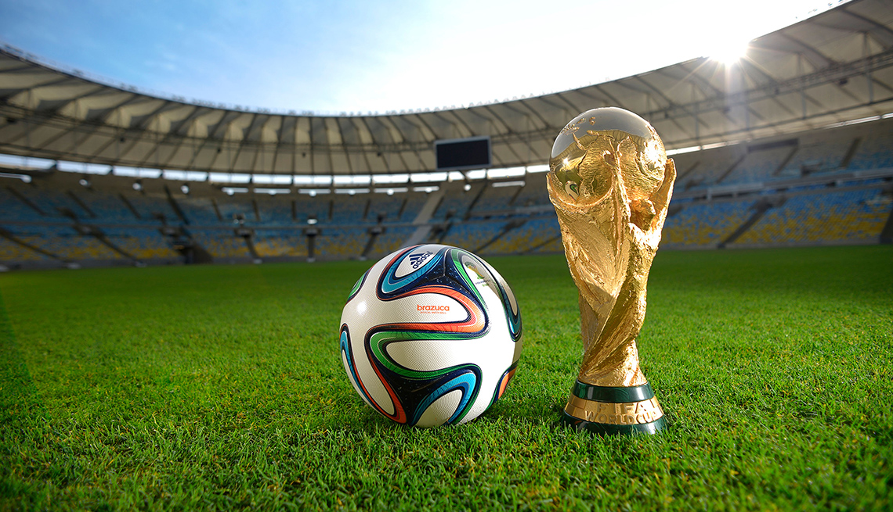

El fútbol o futbol (del inglés británico football, traducido como balompié) es un deporte de equipo jugado entre dos conjuntos de once jugadores cada uno mientras que algunos árbitros que se ocupan de que las normas se cumplan correctamente. Es ampliamente considerado el deporte más popular del mundo, pues lo practican unos 270 millones de personas. También se le conoce como fútbol 11 por el número de jugadores de un equipo o fútbol asociación, nombre derivado de The Football Association, primera federación oficial del mundo en este deporte y que utilizó ese nombre para distinguirlo de otros deportes que incluyen la palabra "fútbol" o "futbol". En algunos países de habla inglesa también se le conoce como soccer, abreviatura de association, puesto que el nombre de football en esos países se asocia mayoritariamente a otros deportes con esa denominación (principalmente en Estados Unidos, donde el nombre football aplica para el fútbol americano, un deporte totalmente distinto). El terreno de juego es rectangular de césped natural o artificial, con una portería o arco a cada lado del campo. Se juega mediante una pelota que se debe desplazar a través del campo con cualquier parte del cuerpo que no sean los brazos o las manos, y mayoritariamente con los pies (de ahí su nombre). El objetivo es introducirla dentro de la portería o arco contrario, acción que se denomina marcar un gol. El equipo que logre más goles al cabo del partido, de una duración de 90 minutos, es el que resulta ganador del encuentro. El juego moderno fue reinventado en Inglaterra tras la formación de la Football Association, cuyas reglas de 1863 son la base del deporte en la actualidad. El organismo rector del fútbol es la Federación Internacional de Fútbol Asociación, más conocida por su acrónimo FIFA. La competición internacional de fútbol más prestigiosa es la Copa Mundial de Fútbol, organizada cada cuatro años por dicho organismo. Este evento es el más famoso y el que cuenta con mayor cantidad de espectadores del mundo, doblando la audiencia de los Juegos Olímpicos. El fútbol se juega siguiendo una serie de reglas, llamadas oficialmente reglas de juego. Este deporte se practica con una pelota esférica (de cuero u otro material con una circunferencia no mayor a 70 cm y no inferior a 68 cm, y un peso no superior a 450 g y no inferior a 410 g al comienzo del partido), donde dos equipos de once jugadores cada uno (diez jugadores "de campo" y un guardameta) compiten por encajar la misma en la portería rival, marcando así un gol. El equipo que más goles haya marcado al final del partido es el ganador; si ambos equipos no marcan, o marcan la misma cantidad de goles, entonces se declara un empate. Puede haber excepciones a esta regla; véase Duración y resultado más abajo. La regla principal es que los jugadores, excepto los guardametas, no pueden tocar intencionalmente la pelota con sus brazos o manos durante el juego, aunque deben usar sus manos para los saques de banda. En un juego típico, los jugadores intentan llevar la pelota hasta la portería rival, lo que se denomina gol, a través del control individual de la misma, conocido como regate, o de pases a compañeros o tiros a la portería, la cual está protegida por un guardameta. Los jugadores rivales intentan recuperar el control de la pelota interceptando los pases o quitándole la pelota al jugador que la lleva; sin embargo, el contacto físico está limitado. El juego en el fútbol fluye libremente, y se detiene solamente cuando la pelota sale del terreno de juego o cuando el árbitro decide que debe detenerse. Luego de cada pausa, se reinicia el juego con una jugada específica. Al final del partido, el árbitro compensa el tiempo total en minutos que se suspendió el juego en diferentes momentos.
 